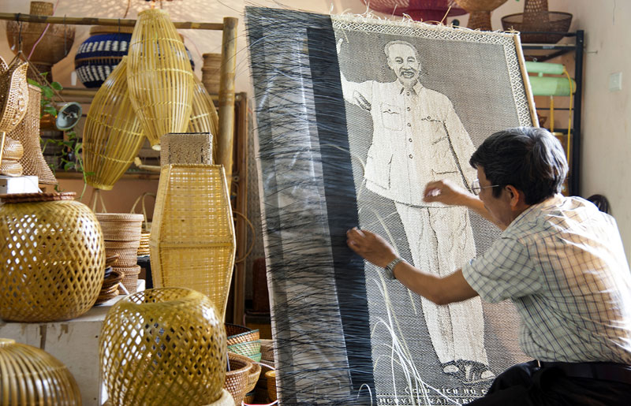

NÉT ĐẸP VĂN HÓA LÀNG NGHỀ
Làng nghề mây tre đan Tăng Tiến
quangtv - 3/2017Làng nghề mây tre đan Tăng Tiến, xã Tăng Tiến, huyện Việt Yên tỉnh Bắc Giang là nơi có nghề đan lát truyền thống nổi tiếng từ rất lâu đời. Làng có lịch sử hình thành nghề đến nay đã hơn 300 năm, khoảng vào thời nhà Hậu Lê và ngày một phát triển lớn mạnh. Về xã Tăng Tiến, huyện Việt Yên, tỉnh Bắc Giang, khi hỏi bất cứ một cụ già nào rằng: "nghề mây tre đan có tự bao giờ?", thì cũng đều nhận được một câu trả lời: “Từ xa xưa, cha ông truyền lại, chẳng ai còn nhớ nổi nữa”. Những đứa trẻ trong xã, khi bắt đầu biết chạy nhảy, nô đùa cũng là lúc chúng học đan lát. Cứ thế, thế hệ sau nối tiếp thế hệ trước, nghề mây tre đan như ăn vào máu thịt, vào khả năng bẩm sinh của mỗi người dân nơi đây.
Từ bao đời nay, người dân Tăng Tiến vẫn say mê với nghề đan lát. Đến với Tăng Tiến, thấy nhà nhà, ai ai cũng làm nghề, tay mành, tay nan lướt nhanh tạo ra những chiếc rá, chiếc rổ, chiếc mành... mới thấy hết được nghệ thuật đan lát, bàn tay khéo léo của người dân nơi đây. Đã từ lâu làng quê yên bình là điểm đến của nhiều thương lái cùng những du khách nước ngoài có sự quan tâm, yêu thích cây tre, cây mây cùng những sản phẩm làm ra từ mây tre, hình ảnh biểu trưng của người Việt. Chính vì thế mà sản phẩm mây tre đan nơi đây được bạn bè, du khách trong và ngoài nước biết và tìm đến tham quan, hợp tác, mua bán. Không chỉ có nghề truyền thống lâu đời, mặt hàng đẹp mà mẫu mã, kiểu dáng, sản phẩm ngày càng đa dạng đã chắp cánh cho mây tre đến được tay những người yêu thích sản phẩm mây tre.
Để làm nên một sản phẩm mây tre Tăng Tiến đối với người thợ đó là một qúa trình sáng tạo nghệ thuật đòi hỏi nhiều công phu, tỉ mỉ, qua nhiều công đoạn. Những cây tre đem về phải mang cắt thành những đoạn nhỏ rồi đến tay người thợ. Họ mang chẻ ra thành những chiếc nan nhỏ như những chiếc tăm nhưng có độ dài 30 đến 40 cm, đặc biệt có khi họ chẻ thủ công bằng tay. Thế nhưng, họ chẻ rất nhanh, điêu luyện và những chiếc tăm đều tăm tắp. Sau đó, từng bó tăm được đem phơi khô. Một khâu đặc biệt quan trọng là nhuộm tăm, để tạo màu, độ bền cho mành tăm, chống mối mọt, đặc trưng của Tăng Tiến. Để tạo ra những sản phẩm bền đẹp, người thợ đem dệt từng chiếc tăm nhỏ thành mành, với những màu chỉ khác nhau kết hợp với màu của tăm mà tạo nên những sản phẩm đa màu sắc, mẫu mã, vừa đẹp mà vừa bền.
Một làng nghề nổi tiếng, có lịch sử lâu đời nay hương nghề đã bay xa, sản phẩm có mặt gần như khắp thế giới, hiện đang thu hút được nhiều du khách yêu mến và muốn khám phá đến với đất Bắc Giang. Mô hình sản xuất phát triển nghề truyền thống ở xã Tăng Tiến trở thành gương điển hình tiên tiến cho các làng nghề khác cùng tham khảo, học tập. Hiện nay, cả nước có nhiều làng nghề dường như đang mất dần “chỗ đứng”, làng nghề mây tre đan Tăng Tiến vẫn đứng vững trước cơ chế thị trường, đây là minh chứng cho sức sống trường tồn của các làng nghề nếu biết xây dựng cho mình một chiến lược phát triển và hướng đi đúng.
Xem nhiều nhất


Bài viết mới nhất


Bài viết liên quan
Bánh đa nem Thổ Hà
Thổ Hà, một làng quê có truyền thống từ lâu đời, nơi đây hiện còn lưu giữ những nét đặc trưng của làng cổ đồng bằng Bắc Bộ với nhiều giá trị quý giá về văn hóa...

Làng nghề bánh đa Kế
Bánh đa Kế là một thức quà không thể bỏ qua nếu bạn có dịp ghé thăm Bắc Giang. Bánh đa ở đây mang một hương vị đặc trưng không thể trộn lẫn với bánh đa ở bất kì nơi đâu...

Rượu làng Vân
Làng Vân thuộc làng Vân Xá, xã Vân Hà, huyện Việt Yên, tỉnh Bắc Giang từ lâu đã nổi tiếng với một thứ men làm ngây ngất lòng người...